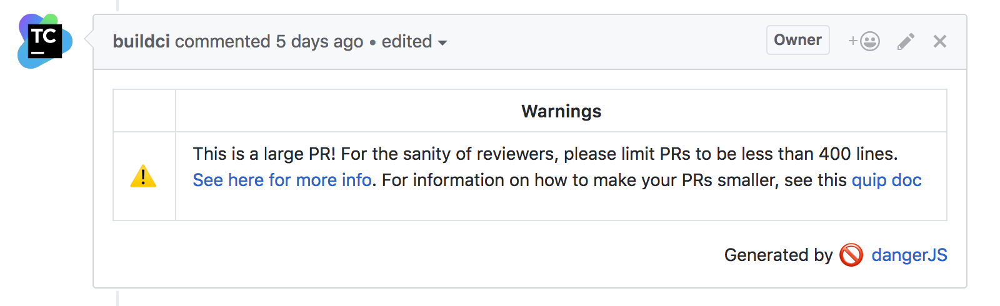

Making Better PRs through Automation
a.k.a. how to stop saying "Get off my lawn!"
About Me
Some stuff about me.
What I do
Imagine this...

Enter DangerJS!
Danger runs during your CI process, and gives teams the chance to automate common code review chores.
In other words, you can make the robot the bad guy!
Before entering the Danger Zone...
Create Team Standards + Rules.
Setting up Danger
Getting set up
- Install Danger in your project
- Create a bot account for Danger to post to your Code Review (currently only support for GitHub)
- Tell your CI how to pass the access token / GitHub URL / current Pull Request number to Danger
- Create a Dangerfile
- Run it!
New Rule: No Missing Tests
The Rule: Every new file our team creates should have a minimum test coverage of N%.
Set-up
First, configure your test runner to output a JSON Coverage report:
jest --coverage --json --outputFile="./coverage-report.json"
Danger Globals
Tools provided by Danger for working with modified/added files:
danger.git.created_files- New Filesdanger.git.deleted_files- Files that were removeddanger.git.modified_files- Files that were changed.
const MINIMUM_TEST_COVERAGE = 0.5
const jsFileTest = /.js$/
const testFileTest = /.test.js$/
const storiesFileTest = /.stories.js$/
const filesNeedingTests = danger.git.created_files
.filter(f => isJsFile(f) && !isTestFile(f) && !isStorybookFile(f) && !whiteListedFiles.includes(f))
.filter(f => {
// The path in the test report is an absolute path.
const absPath = path.resolve(f)
const report = testReport[absPath]
// If there's no report, this file isn't part of a coverage, so should not be included.
if (!report) {
return false
}
const { statements: { pct } } = report
return pct < MINIMUM_TEST_COVERAGE
}))
Reporting to the PR
Danger provides utilities for how it will post to the Pull Request:
danger.info- Tidbitsdanger.warn- Draw attentiondanger.fail- Request Changes on the PR.
if (filesNeedingTests.length) {
const filesNeedingTestsOutput = filesNeedingTests.
map(f => .map(f => '- `' + f + '`')).join('\n')
const output = `It looks like you've added some new files, but forgot the tests.
Missing Test Files:
${filesNeedingTestsOutput}`
warn(output)
}
Behold!

New Rule: Preserve Reviewer Sanity
The Rule: Encourage developers to keep their PRs under 400 LoC.
const LARGE_PR_LINES = 400
if (danger.github.pr.additions > LARGE_PR_LINES) {
warn('This is a long PR. For the sanity of reviewers,'
+ 'please limit PRs to be less than 400 LoC')
}
Behold!
But does it work?
Graph showing the total number of unit tests in our front end code base:
And More...
- Report ESLint Failures
- Report Stylelint Failures
- Commit fixable linter changes
- Report Unit Test Failures
- ...
Wait..I thought this was a React Meetup!
- Ensure that components have Storybooks
- Ensure components have READMEs
- The Sky is the limit...
Any Questions?
Interested in building better tooling?
We're hiring!